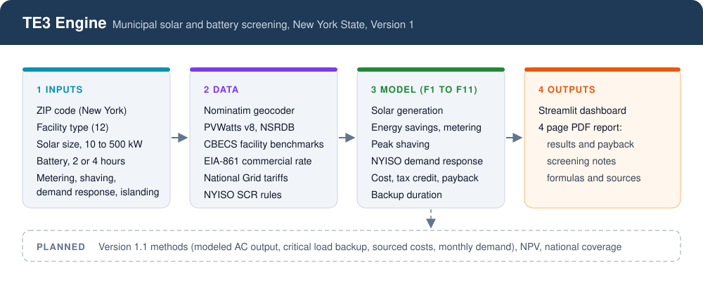

From a ZIP code, a facility type and a solar array size, TE3 Engine estimates annual solar generation, the share of facility electricity use met by solar, annual savings by revenue stream, net capital cost, simple payback and, when selected, an indicative backup duration. Each run produces a four page PDF screening report that shows every formula and source.
Results are screening estimates that show whether a detailed study is warranted. They are not a design, an investment grade analysis, or tax or legal advice.
How it works

Version 1 at a glance
| Coverage | New York State ZIP codes; National Grid (Niagara Mohawk) tariffs and rates |
| Facility types | 12 municipal types, from offices and schools to water plants and street lighting |
| Revenue streams | On site energy savings, net metering, battery peak shaving, NYISO demand response |
| Solar resource | PVWatts v8 with National Solar Radiation Database data |
| Verification | Three rounds of acceptance testing, 12 automated tests, a check of every cited link |
Documentation
- Working paper, Revision 2 (November 2026): methods, data, verification, limitations and a worked example
- README: installation, API key, tests and limitations
Cite
Akindipe, S. O. (2026). TE3 Engine: Techno-Economic Evaluation Engine (Version 1.0) [Computer software]. https://doi.org/10.5281/zenodo.24239224 Akindipe, S. O. (2026). TE3 Engine: A Techno-Economic Screening Framework for Municipal Solar PV and Battery Storage, New York State Implementation (Version 1). Working Paper, Revision 2. PAPER-DOI-URL